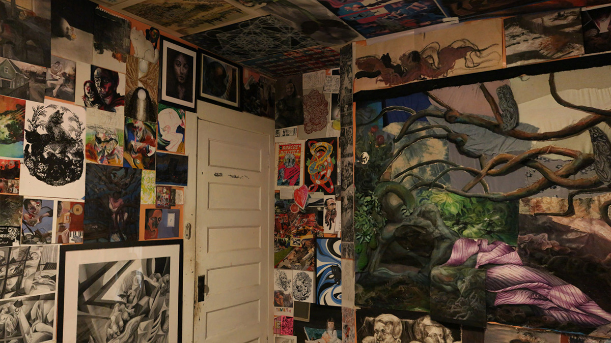
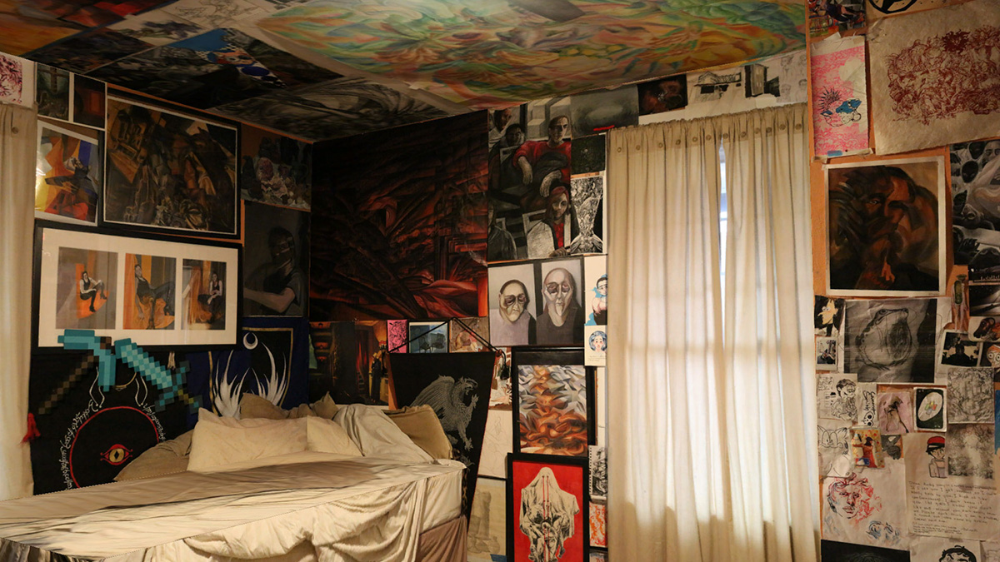

The GraveShrine
Completed in 2023. Modeled in Unity and Blender.
The GraveShrine serves as an artificial burial for a person I used to be.
Everything displayed was collected in a past life.
I wanted a place to lay him to rest.
In the secrecy of a bedroom,
the vivid scraps become the daydream inside of someone's head projected onto the artificial walls.
 